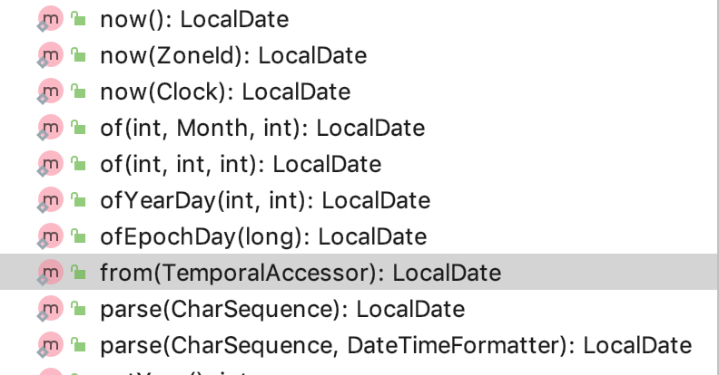
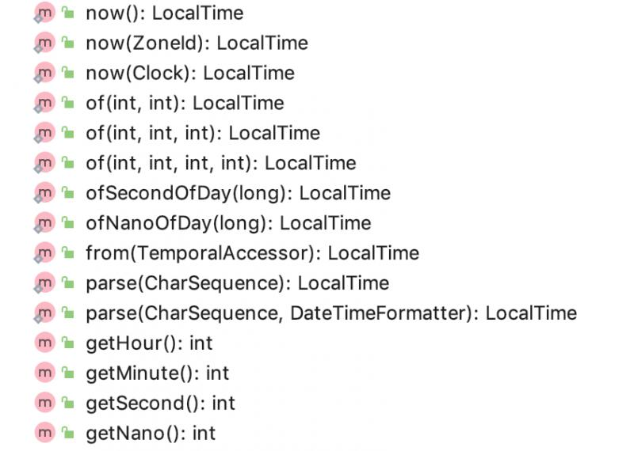
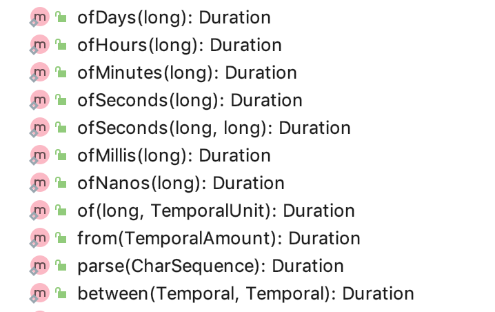

java的日期和时间API设计不理想，java8引入新的时间和日期API就是为了解决这个问题。
| 老的日期API的核心类 | 缺点 |
|---|---|
| Date | 月从0开始，年最小从1900年开始，没有时区的概念 |
| Calendar | 月从0开始 |
| DateFormat | 线程不安全 |
| 其它 | 同时存在Date和Calendar难以选择； Date和Calendar类都是可变的，维护噩梦 |
java8引入了类似joda-time的新特性。核心类如下：
标识日期。下面是javadoc的翻译：
日期没有时区，处在ISO-8601日历系统下。例如：2007-12-03
是一个不可变日期对象常见表示是年月日，其它的日期字段比如dayOfYear,dayOfWeek,weekOfYear也是可以访问的。
LocalDate.now().get(ChronoField.ALIGNED_WEEK_OF_YEAR);
举个例子， 2007年10月2日可以存放在LocalDate里。
这个类没有存储或者代表时间或者时区。
相反，它描叙了日期，比如可以用来表示生日，他不能代表一个时间线上的没有附加信息的瞬间，比如一个偏移量后者时区。
这是一个基于值的类，使用标识敏感的操作，比如 == ， hashCode(), 或者LocalDate对象的同步操作可能会有无法预测的结果，并且应该避免。equals方法应该被用来比较。
这个类是不可变并且线程安全的。
下面是javadoc原文，不重要的内容我删掉了。
/**
* A date without a time-zone in the ISO-8601 calendar system,
* such as {@code 2007-12-03}.
* <p>
* {@code LocalDate} is an immutable date-time object that represents a date,
* often viewed as year-month-day. Other date fields, such as day-of-year,
* day-of-week and week-of-year, can also be accessed.
* For example, the value "2nd October 2007" can be stored in a {@code LocalDate}.
* <p>
* This class does not store or represent a time or time-zone.
* Instead, it is a description of the date, as used for birthdays.
* It cannot represent an instant on the time-line without additional information
* such as an offset or time-zone.
* <p>
* This is a <a href="{@docRoot}/java/lang/doc-files/ValueBased.html">value-based</a>
* class; use of identity-sensitive operations (including reference equality
* ({@code ==}), identity hash code, or synchronization) on instances of
* {@code LocalDate} may have unpredictable results and should be avoided.
* The {@code equals} method should be used for comparisons.
* This class is immutable and thread-safe.
public final class LocalDate
implements Temporal, TemporalAdjuster, ChronoLocalDate, Serializable 
主要有4种构造方法：
| 构造方法种类 | 说明 |
|---|---|
| of类 | 有4个， of(int year,int month, int day) , of(int year, Month month, int day) , ofYearDay(int year, int dayofYear), ofEpochday(long epochDay) 1970年1月1日为机器元年 |
| now类3个 | 实际上重载了now(Clock clock), 其它两个 now(), now(ZoneId zoneId) 取得是机器在某个时区的始终，取的日期，然后调用ofEpochday(long epochDay)来初始化日期 |
| from类1个 | from(TemporalAccessor temporal) 通过一个Temporal对象来初始化日期，具体用法见例子 |
| parse类2个 | pase(string date),parse(String date , DateTimeFormatter formater)以字符串的方式初始化日期 |
获取类方法：
| 获取类方法 | 说明 |
|---|---|
| getYear() | 获取年 |
| getMonthValue() | 获取月份数值 |
| getMonth() | 得到月份对象 |
| getDayOfMonth | 得到月份的天数值 |
| getDayOfWeek | 得到一周的星期数 |
package com.test.time;
import java.time.LocalDate;
import java.time.chrono.ChronoLocalDate;
import java.time.format.DateTimeFormatter;
import java.time.temporal.TemporalAccessor;
import java.time.temporal.TemporalField;
import java.util.Objects;
/**
* 说明：localDate类研究
* @author carter
* 创建时间： 2019年11月11日 15:31
**/
public class LocalDateTest {
public static void main(String[] args) {
LocalDate localDate = LocalDate.of(2019,11,11);
print("localDate.getYear()",localDate.getYear());
print("localDate.getMonth().getValue()",localDate.getMonth().getValue());
print("localDate.lengthOfMonth()",localDate.lengthOfMonth());
print("localDate.getMonthValue()",localDate.getMonthValue());
print("localDate.getDayOfMonth()",localDate.getDayOfMonth());
print("localDate.getDayOfWeek().getValue()",localDate.getDayOfWeek().getValue());
print("localDate.getDayOfYear()",localDate.getDayOfYear());
print("localDate.lengthOfYear()",localDate.lengthOfYear());
print("localDate.getChronology()",localDate.getChronology());
print("localDate.getEra()",localDate.getEra());
print("localDate.isLeapYear()",localDate.isLeapYear());
final LocalDate localDateNow = LocalDate.now();
print("localDateNow.atStartOfDay()",localDateNow.atStartOfDay());
final LocalDate localDateOfEpo = LocalDate.ofEpochDay(1L);
print("localDateOfEpo.format(DateTimeFormatter.BASIC_ISO_DATE)",localDateOfEpo.format(DateTimeFormatter.BASIC_ISO_DATE));
final LocalDate localDateFrom = LocalDate.from(new TemporalAccessor() {
@Override
public boolean isSupported(TemporalField field) {
return true;
}
@Override
public long getLong(TemporalField field) {
//这块实际上设置的是epochDay,即机器的增量日期
return 2;
}
});
print("localDateFrom.format(DateTimeFormatter.BASIC_ISO_DATE)",localDateFrom.format(DateTimeFormatter.BASIC_ISO_DATE));
final LocalDate localDateParse = LocalDate.parse("2019-11-11");
print("localDateParse.format(DateTimeFormatter.BASIC_ISO_DATE)",localDateParse.format(DateTimeFormatter.BASIC_ISO_DATE));
}
private static void print(String title,Object printContent){
System.out.println(title + " : " + Objects.toString(printContent));
}
}
输出：
localDate.getYear() : 2019
localDate.getMonth().getValue() : 11
localDate.lengthOfMonth() : 30
localDate.getMonthValue() : 11
localDate.getDayOfMonth() : 11
localDate.getDayOfWeek().getValue() : 1
localDate.getDayOfYear() : 315
localDate.lengthOfYear() : 365
localDate.getChronology() : ISO
localDate.getEra() : CE
localDate.isLeapYear() : false
localDateNow.atStartOfDay() : 2019-11-12T00:00
localDateOfEpo.format(DateTimeFormatter.BASIC_ISO_DATE) : 19700102
localDateFrom.format(DateTimeFormatter.BASIC_ISO_DATE) : 19700103
localDateParse.format(DateTimeFormatter.BASIC_ISO_DATE) : 20191111
其它的方法先不做探究，后面会研究到。先提出这块的代码参考。
跟LocalDate类似，javadoc类似，区别是它可以标示的值通常表现为时分秒，可以精确到纳秒。

通过获取机器时间的时分秒纳秒部分来初始化。
package com.test.time;
import java.time.LocalDate;
import java.time.LocalTime;
/**
* 说明：localTime类研究
* @author carter
* 创建时间： 2019年11月12日 10:35
**/
public class LocalTimeTest {
public static void main(String[] args) {
final LocalTime localTime = LocalTime.of(12, 0, 0, 0);
System.out.println(localTime);
System.out.println( "LocalTime.hour"+ " : "+localTime.getHour());
System.out.println( "LocalTime.getMinute"+ " : "+localTime.getMinute());
System.out.println( "LocalTime.getSecond"+ " : "+localTime.getSecond());
System.out.println( "LocalTime.getNano"+ " : "+localTime.getNano());
System.out.println( "LocalTime.MIDNIGHT"+ " : "+LocalTime.MIDNIGHT);
System.out.println("LocalTime.NOON"+ " : "+LocalTime.NOON);
System.out.println("LocalTime.MIN"+ " : "+LocalTime.MIN);
System.out.println("LocalTime.MAX"+ " : "+LocalTime.MAX);
}
}
是localDate,localTime的合体，标示日期时间。
package com.test.time;
import java.time.LocalDate;
import java.time.LocalDateTime;
import java.time.LocalTime;
import java.time.ZoneId;
import java.time.ZoneOffset;
/**
* 说明：localdatetime的简单研究
* @author carter
* 创建时间： 2019年11月12日 10:47
**/
public class LocalDateTimeTest {
public static void main(String[] args) {
LocalDateTime localDateTime = LocalDateTime.now();
System.out.println("localDateTime.getYear()" + " : " + localDateTime.getYear());
System.out.println("localDateTime.getMonthValue()" + " : " + localDateTime.getMonthValue());
System.out.println("localDateTime.getDayOfMonth()" + " : " + localDateTime.getDayOfMonth());
System.out.println("localDateTime.getHour()" + " : " + localDateTime.getHour());
System.out.println("localDateTime.getMinute()" + " : " + localDateTime.getMinute());
System.out.println("localDateTime.getSecond()" + " : " + localDateTime.getSecond());
System.out.println("localDateTime.getNano()" + " : " + localDateTime.getNano());
final LocalDateTime ofEpochSecond = LocalDateTime.ofEpochSecond(System.currentTimeMillis() / 1000, 0,ZoneOffset.ofHours(8));
System.out.println("ofEpochSecond" + " : " + ofEpochSecond);
//通过localdatetime获取localdate, localtime,也可以通过localdate,localtime得到localdatetime
final LocalDate localDate = localDateTime.toLocalDate();
final LocalTime localTime = localDateTime.toLocalTime();
System.out.println("localDate" + " : " + localDate);
System.out.println("localTime" + " : " + localTime);
final LocalDateTime localDateTimeFromLocalDate = localDate.atTime(LocalTime.MIN);
final LocalDateTime localDateTimeFromLoalTime = localTime.atDate(LocalDate.now());
System.out.println("localDateTimeFromLocalDate" + " : " + localDateTimeFromLocalDate);
System.out.println("localDateTimeFromLoalTime" + " : " + localDateTimeFromLoalTime);
}
}
机器的时间模型：是以机器元年1970年1月1日经历的秒数来计算；等同于LocalDateTime. 但是只能从中获取秒和纳秒，无法获取年月日时分等时间。
package com.test.time;
import java.time.Instant;
import java.time.temporal.ChronoField;
import java.time.temporal.ChronoUnit;
/**
* 说明：TODO
* @author carter
* 创建时间： 2019年11月12日 11:08
**/
public class InstanceTest {
public static void main(String[] args) {
Instant instant1 = Instant.ofEpochSecond(3);
Instant instant2 = Instant.ofEpochSecond(2,1000000000);
System.out.println("instant1" + " : " + instant1);
System.out.println("instant2" + " : " + instant2);
System.out.println(instant1.get(ChronoField.DAY_OF_YEAR));
}
}
instant1 : 1970-01-01T00:00:03Z
instant2 : 1970-01-01T00:00:03Z
Exception in thread "main" java.time.temporal.UnsupportedTemporalTypeException: Unsupported field: DayOfYear
at java.time.Instant.get(Instant.java:566)
at com.test.time.InstanceTest.main(InstanceTest.java:25)
LocalDate,LocalTime.LocalDateTime.Instant都实现Temporal接口,可以读取和设置时间，接下来的Duration,Period是基于两个Temporal接口来建模的。
主要获取秒和纳秒的单位，不可计算LocalDate的时间差；

构造方法：
| 构造方法种类 | 说明 |
|---|---|
| of系列 | ofDays(long days),ofHours(long hours),ofMinutes(long minutes),ofSeconds(long seconds),ofSeconds(long secends,long nano),ofMilis(long minis),ofNanos(long nanos),of(long time,TemporalUnit)最后通过of方法重载 |
| from类 | from(TemporalAmount amount) |
| parse类 | |
| between类 | 两个Temporal之间的差值 |
package com.test.time;
import java.time.Duration;
import java.time.LocalDateTime;
import java.time.Period;
import java.time.temporal.ChronoUnit;
import java.time.temporal.Temporal;
import java.time.temporal.TemporalAmount;
import java.time.temporal.TemporalUnit;
import java.util.Arrays;
import java.util.List;
/**
* 说明：Duration
* @author carter
* 创建时间： 2019年11月12日 13:09
**/
public class DurationTest {
public static void main(String[] args) {
final Duration duration = Duration.between(LocalDateTime.of(1988, 1, 2, 0, 0, 0), LocalDateTime.now());
System.out.println("duration "+ " : " + duration);
System.out.println("duration.toDays() "+ " : " + duration.toDays());
System.out.println("duration.toHours() "+ " : " + duration.toHours());
System.out.println("duration.toMinutes() "+ " : " + duration.toMinutes());
final Duration durationHours = Duration.ofHours(1);
System.out.println("durationHours "+ " : " + durationHours);
System.out.println("durationHours.toHours() "+ " : " + durationHours.toHours());
System.out.println("durationHours.toMinutes() "+ " : " + durationHours.toMinutes());
System.out.println("durationHours.getSeconds() "+ " : " + durationHours.getSeconds());
final Duration fromDuration = Duration.from(Duration.ofDays(1));
System.out.println(":" + fromDuration);
final Duration durationParse = Duration.parse("PT279301H32M6.488S");
System.out.println(durationParse);
}
}
duration : PT279301H32M50.61S
duration.toDays() : 11637
duration.toHours() : 279301
duration.toMinutes() : 16758092
durationHours : PT1H
durationHours.toHours() : 1
durationHours.toMinutes() : 60
durationHours.getSeconds() : 3600
:PT24H
PT279301H32M6.488S可以获取年，月,日的差值；
package com.test.time;
import java.time.LocalDate;
import java.time.Period;
import java.time.temporal.ChronoUnit;
import java.time.temporal.TemporalUnit;
/**
* 说明：TODO
* @author carter
* 创建时间： 2019年11月12日 13:04
**/
public class TestPeriod {
public static void main(String[] args) {
final Period period = Period.between(LocalDate.of(1988, 1, 2), LocalDate.now());
System.out.println(period);
System.out.println(period.getYears());
System.out.println(period.getMonths());
System.out.println(period.getDays());
System.out.println(period.get(ChronoUnit.DAYS));
System.out.println( period.toTotalMonths());
}
}
也可以用来计算差值，没有限制。
final long daysBetween = ChronoUnit.YEARS.between(LocalDate.of(1988, 1, 2), LocalDate.now());
System.out.println(daysBetween);
```
# 操纵和格式化日期
|操作类|说明|
|-|-|
|with类|设置时间的数值，with(ChronoField field,Long newvalue)|
|plus|加多少时间单位|
|minus|减掉多少时间|

with(TemproalAdjuster adjuster)
提供了快速的方法去设置时间。
|快速方法|说明|
|-|-|
|firstDayOfMonth|设置为月的第一天|
|lastDayOfMonth|设置为月的最后一天|
|firstDayOfNextMonth|下月的第一天|
|firstDayOfYear|年的第一天|
|lastDayOfYear|年的最后一天|
|firstDayOfNextYear|下年的第一天|
|lastInMonth|最后一个符合星期几的|
package com.test.time;
import java.time.DayOfWeek;
import java.time.LocalDate;
import java.time.LocalTime;
import java.time.format.DateTimeFormatter;
import java.time.format.DateTimeFormatterBuilder;
import java.time.format.FormatStyle;
import java.time.temporal.ChronoField;
import java.time.temporal.TemporalAdjusters;
import java.time.temporal.TemporalField;
/**
public class OpTest {
public static void main(String[] args) {
final LocalDate localDate = LocalDate.now().withYear(1988).withDayOfYear(2).with(ChronoField.MONTH_OF_YEAR, 2L);
System.out.println(localDate);
final LocalTime localTime = LocalTime.now().plusHours(1).plusHours(1).plusMinutes(10);
System.out.println(localTime);
final LocalDate localDate1 = LocalDate.now().with(TemporalAdjusters.firstDayOfMonth());
System.out.println(localDate1);
final LocalDate localDate2 = LocalDate.now().with(TemporalAdjusters.firstInMonth(DayOfWeek.FRIDAY));
System.out.println("本月的第一个星期五：" + localDate2);
final LocalDate localDate3 = LocalDate.now().with(TemporalAdjusters.lastInMonth(DayOfWeek.FRIDAY));
System.out.println("本月的最后一个星期五：" + localDate3);
final LocalDate localDate4 = LocalDate.now().withDayOfMonth(15);
System.out.println( localDate4 + "下一个工作日是： " + localDate4.with(getNextWorkDay(localDate4)));
System.out.println(localDate4.format(DateTimeFormatter.ofPattern("YYYY-MM-dd")));
System.out.println(localDate4.format(DateTimeFormatter.ofLocalizedDate(FormatStyle.FULL)));
System.out.println(localDate4.format(DateTimeFormatter.ofLocalizedDate(FormatStyle.LONG)));
System.out.println(localDate4.format(DateTimeFormatter.ofLocalizedDate(FormatStyle.MEDIUM)));
System.out.println(localDate4.format(DateTimeFormatter.ofLocalizedDate(FormatStyle.SHORT)));
System.out.println(localDate4.format(new DateTimeFormatterBuilder().appendText(ChronoField.YEAR).appendLiteral("====").appendText(ChronoField.MONTH_OF_YEAR).toFormatter()));
}
public static LocalDate getNextWorkDay(LocalDate localDate) {
return localDate.with(TemporalAdjusters.ofDateAdjuster((temp) -> {
final DayOfWeek dayOfWeek = temp.getDayOfWeek();
if (dayOfWeek.getValue() == 5) {
return temp.plusDays(3);
} else if (dayOfWeek.getValue() == 6) {
return temp.plusDays(2);
} else {
return temp.plusDays(1);
}
}));
}}
# 处理不同的时区
>时间是相对时区来说的，时区是按照一定规则将区域划分成标准时间相同的区间。得到一个时区之后，zoneId，可以结合LocalDate,LocalDateTime,Instant 结合起来，构造一个ZonedDateTime
package com.test.time;
import java.time.Instant;
import java.time.LocalDate;
import java.time.LocalDateTime;
import java.time.OffsetDateTime;
import java.time.ZoneId;
import java.time.ZoneOffset;
import java.time.ZonedDateTime;
import java.util.TimeZone;
/**
public class ZoneTest {
public static void main(String[] args) {
ZoneId zoneId = TimeZone.getDefault().toZoneId();
System.out.println(zoneId);
final ZoneId zoneId1 = ZoneId.of("Asia/Shanghai");
System.out.println(zoneId1.toString());
//LocalDateTime和 Instant互相转换；
LocalDateTime localDateTime = LocalDateTime.now();
final ZoneOffset zoneOffset = ZoneOffset.of("+8");
Instant instant = localDateTime.toInstant(zoneOffset);
System.out.println(localDateTime);
System.out.println(instant);
LocalDateTime localDateTime1 = LocalDateTime.ofInstant(instant,ZoneId.systemDefault());
System.out.println(localDateTime1);
//基于时区的日期1
ZonedDateTime zonedDateTime = ZonedDateTime.of(LocalDateTime.now(),ZoneId.systemDefault());
System.out.println(zonedDateTime);
//基于时区的日期2
OffsetDateTime offsetDateTime = OffsetDateTime.of(LocalDateTime.now(),zoneOffset);
System.out.println(offsetDateTime);
}}
# 处理不同的日历系统
>ISO-8601日历系统是世界文明日历系统的事实标准。但是，Java 8中另外还提供了4种其他的 日历系统。这些日历系统中的每一个都有一个对应的日志类，分别是ThaiBuddhistDate、 MinguoDate 、 JapaneseDate 以 及 HijrahDate 。
//泰国佛教日期
final ThaiBuddhistDate thaiBuddhistDate = ThaiBuddhistDate.from(LocalDateTime.now());
System.out.println(thaiBuddhistDate);
//民国日期
final MinguoDate minguoDate = MinguoDate.from(LocalDateTime.now());
System.out.println(minguoDate);```
java8之前的老版本的Date,Calendar有很多设计缺陷，自己设计的api中应该退出历史舞台。
新版的日期API中日期都是不可变的，并且是线程安全的；
新版的日期API中区别人和机器的方式标识时间；
你可以灵活的改变日期，或者通过更灵活的TemporalAdjuster来操作日期
你可以相对于某个时区和位置与格林尼治时间的偏差的方式来小时时区，并应用到日期和时间对象上进行本地化
原创不易，转载请注明出处。